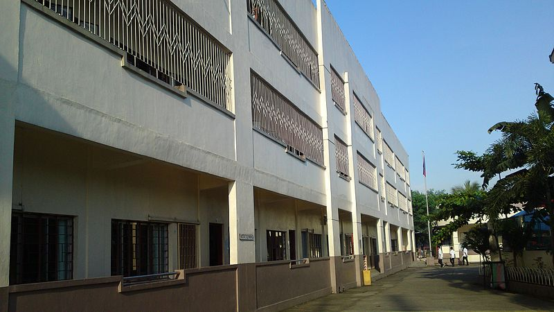
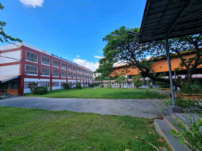

➤ MAPULANG LUPA NATIONAL HIGHSCHOOL
Back 2021 JHS Moving Up year, When I left MLNHS, I was sad and also happy. It was sad because many memories were formed in that school, that's where I met my true friends, where I found a friend who would never leave me. it's funny because it was in that school that I learned, had fun and did something silly HAHAHA just kidding. I learned a lot in my school and I will remember it for the rest of my life because it was also part of what I learned in life. On the other hand, I'm also happy because it was part of my being a student in high school. It's also fun because I find a new school and new memories of the school that I moved to.
My bestfriend(Nico) asked me to join their group, I joined them because I knew that they are kind and reliable friends. We are 9 in group, their names are Nico, Moises, Richmond, Jake, Carl, Novien, Jayrald, Jimuel, and Me.
Groupfie with my friends
➤ ELECTRON COLLEGE OF TECHNICAL EDUCATION
Here in Electron, I would say.. I'm happy in this school, but something is missing. Before I enrolled in this school, my expectation is so high, I thought it would be the best school that I enrolled. I hoping that this school become better in future.I understand why the school is like this, there is no teacher, there is a lack of school equipment, the other facilities are not in good condition but I clearly seeing in future, that this school become a popular, and some new students will be enroll.